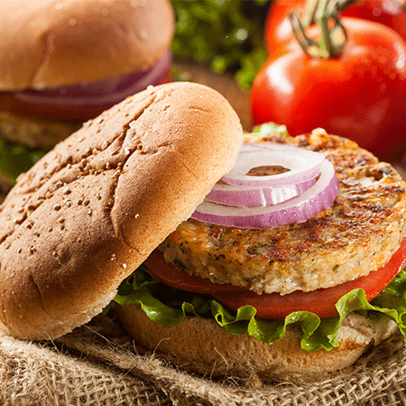

Vegetable Burger

Delicious, lip-smacking and crunchy these words will only remind you of this amazing American dish popularly known as Burger. No matter how you prepare a burger, this dish is will leave you craving for more each time you eat it you have it. So, this time when your kids want to relish something good and delicious at home, prepare this simple yet delicious Vegetable Burger recipe. Not only is this dish delicious, but at the same time preparing it at home simply amps up the health quotient.
The best thing about preparing this quick Vegetable Burger at home is that you can add your own twist of flavours and ingredients to it. For instance, if you are fond of cheesy sauces, you can use a cheesy mayo and a cheese slice and let it melt. To make it even more delicious you can add any sauce or condiment of your choice. It also makes for a simple snack dish, whenever those untimely hunger pangs strike. If you are on your fat loss journey then, this can certainly be your companion, all you need to do is just tweak the recipe as per your preference and avoid fatty substances.
Also prepare the patty in a microwave by just brushing some oil, this will bring down the calorie count like anything! Made with fresh veggies and a few spices, this snack recipe is apt for school lunch box, road trips and game nights. Kids will certainly love this easy recipe!So, try out this easy recipe and enjoy it with your loved ones.
Ingredients
- 1 sliced onion
- 4 slices cheese slices
- 1 teaspoon powdered garam masala powder
- 2 teaspoon refined oil
- 1/2 gm ginger paste
- 4 halved burger buns
- 2 tablespoon tomato ketchup
- 1 sliced tomato
- 2 teaspoon powdered red chilli
- 1/2 teaspoon garlic paste
- 2 pinch powdered salt
- 3 tablespoon breadcrumbs
- 1 teaspoon lemon juice
- 3 tablespoon butter
- 1 handful chopped coriander leaves
- 4 leaves lettuce loose-leaf
- 1/2 peeled,sliced cucumber
- 2 chopped onion
- 1/2 cup shelled peas
- 2 mashed,boiled,peeled potato
- 2 chopped carrot
- 1/2 cup corn
Cooking Process
- Add the cooked vegetables, chopped onions, red chilli powder, lemon juice, garam masala powder, salt and ginger-garlic paste to a large bowl.
- Add lemon juice and mashed potatoes in the bowl, mix well until evenly combined. Shape the mixture into small/medium patties.
- Now heat oil in a pan over medium flame. Roll the prepared patties in the breadcrumbs and shallow fry until golden brown on both sides.
- Remove and keep aside.
- Take one half of the burger bun. Spread some butter and place the lettuce on top.
- Place the prepared vegetable patty on top. Top up with slices of onion, tomato, cucumber and cheese. If you want to make it even more delicious and healthy replace cheese with eggless mayonnaise.
- Cover it with the other half of the burger bun. If desired, add some ketchup on top. Secure it with a toothpick if desired.
- Serve at once with french fries. Make sure you like this recipe, rate it and let us know in the comments how it turned out to be.